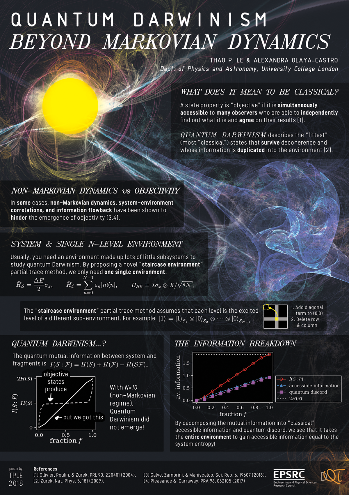

The following poster was presented at the Quantum Information Processing Conference at Delft, The Netherlands, on the 16th January 2018. The corresponding paper for this work is Objectivity (or lack there-of) in the dynamics of a two level system interacting with a single effective environment beyond the Markovian regime

Dept. of Physics and Astronomy, University College London
A state property is "objective" if it is simultaneously accessible to many observers who are able to independently find out what it is and agree on their results [1].
describes the "fittest" (most "classical") states that survive decoherence and whose information is duplicated into the environment [2].
A bright yellow sphere has swirling lines of light emerging from it. Some of these lines connect it to a larger nebulous blue shape that is made up of different layers of light. One of these represent the system and the other the environment: the connecting lines represent their interaction.
In some cases, non-Markovian dynamics, system-environment correlations, and information flowback have been shown to hinder the emergence of objectivity [3,4].
Usually, you need an environment made up of lots of little subsystems to study quantum Darwinism. By proposing a novel "staircase environment" partial trace method, we only need one single environment.
\(\hat{H}_\mathcal{S} = \dfrac{\Delta E}{2} \sigma_z,\) \(\hat{H}_\mathcal{E} = \sum_{n=0}^{N-1} \epsilon_n |n\rangle \langle n|,\) \(H_\mathcal{SE} = \lambda \sigma_x \otimes X / \sqrt{8N}\).
The "staircase environment" partial trace method assumes that each level is the excited level of a different sub-environment. For example: \(|1\rangle = |1\rangle_{\mathcal{E}_1}\otimes |0\rangle_{\mathcal{E}_2} \otimes \cdots \otimes |0\rangle_{\mathcal{E}_{N-1}}\).
Pictorial representation of the staircase environment partial trace: A black square, with a row and a column highlighted in light grey. Where the row and column intersect (at the diagonal), there is a yellow square. An arrow points from the square to the top-left corner of the overarching black square.
The quantum mutual information between system and fragments is \(I(\mathcal{S}:\mathcal{F})=H(\mathcal{S})+H(\mathcal{F}) - H(\mathcal{SF})\).
A plot with fraction \(f\) of the environment on the horizontal axis; and mutual information \(I(\mathcal{S}:\mathcal{F})\) on the vertical axis. Objective states produce a plot where for small fraction, the plot quickly rises from (0.0,0) to mutual information about \(H(\mathcal{S})\); the line is then flat, until near fraction approximately 1, where it quickly rises up to \(2 H(\mathcal{S})\) (which is the maximum about of mutual information possible for pure states). In contrast, the plot we found is almost a straight, steady line going from (0.0,0) to (1.0, 2 H(S)).
With \(N=10\) (non-Markovian regime), Quantum Darwinism did not emerge!
Plot with environment fraction \(f\) on the horizontal axis and average information o the vertical axis. The graph compares the mutual information \(I(\mathcal{S}:\mathcal{F})\) with the accessible information, quantum discord, and the maximum value of \(2 H(\mathcal{S})\). The mutual information rises from diagonally from bottom left to top right. The accessible information is a tiny bit larger than the quantum discord, but are approximately the same, and their slope is both half that of the mutual information.
By decomposing the mutual information into "classical" accessible information and quantum discord, we see that it takes the entire environment to gain accessible information equal to the system entropy!
{kind=link}